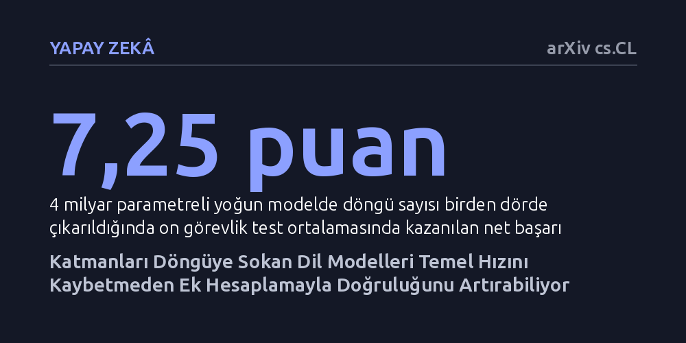

YAPAY-ZEKA · arXiv cs.CL · 2026-10-13
Araştırmacılar, katmanları döngüyle tekrar çalıştıran dil modellerinin ilk turda yaşadığı başarı kaybını gidermeyi amaçladı. Geliştirilen eğitim yöntemiyle tek döngüde standart model başarısı korunurken, döngü sayısı arttıkça modelin doğruluğu 7 puana kadar yükseltildi.
Farklı hız ve doğruluk ihtiyaçları için ayrı modeller eğitmek yerine, tek bir modelin işlem süresi ihtiyaca göre ayarlanarak doğruluğu anlık olarak ölçeklenebilir.

Büyük dil modellerinde yaygın kabul gören kural basittir: Bir soru ne kadar basit ya da karmaşık olursa olsun, model her kelime için sabit sayıda katmandan geçer ve aynı miktarda işlem gücü harcar. Bu durum, pratik uygulamalarda mühendisleri zor bir tercihe iter. Hızlı yanıt vermesi gereken durumlar için daha küçük ve yüzeysel modeller tercih edilirken, derin akıl yürütme gerektiren zorlu görevler için çok daha büyük ve kaynak tüketen modeller kullanılır.
Bu ikilemi aşmak için katmanların döngüye sokulması, yani aynı katman bloğunun peş peşe birden fazla kez çalıştırılması fikri öne sürülmüştür. Ancak bu mimarilerin önünde ciddi bir engel vardı: Model yalnızca bir kez döngüye sokulduğunda, aynı boyuttaki standart bir modele göre belirgin şekilde daha düşük performans gösteriyordu. Literatürde 'tek döngü cezası' olarak adlandırılan bu kayıp, hızlı çalışması gereken sistemlerde döngülü modellerin tercih edilmesini imkânsız hale getiriyordu.
Araştırmacılar, bu kaybı ortadan kaldırmak için 'Esnek Gizil Yineleme' (ELR) adını verdikleri yeni bir eğitim yaklaşımı geliştirdi. Yöntemin temelini üç kritik teknik tercih oluşturuyor: Modelin durumunu güncellerken öğrenilebilir adım boyutuna sahip bir kapı mekanizması kullanılması, eğitim sırasında optimizasyon adımlarında farklı döngü sayılarının karma olarak uygulanması ve modelin her adımda kaçıncı döngüde olduğunu ve toplam döngü bütçesini bilmesini sağlayan koşullandırma.
Bu tercihlerden ilk ikisi modelin tek döngüdeki temel başarısını korurken, üçüncüsü eklenen her yeni döngüde kayıp oranını sistematik olarak düşürdü. Ayrıca döngülü modelleri en baştan eğitmenin getireceği yüksek maliyeti sınırlamak amacıyla karma derinlik eğitimi ön eğitimin son evrelerinde devreye sokuldu. Sıfırla başlatılan koşullandırma mekanizması sayesinde, geç geçiş yapılan bu takvim sıfırdan eğitime kıyasla daha da başarılı sonuçlar üretti.
Geliştirilen yöntem hem 4 milyar parametreli yoğun bir modelde hem de 30 milyar parametreli uzmanlar karması (MoE) mimarisinde denendi. Tek döngüde çalıştırıldığında ELR modeli, aynı verilerle eğitilen geleneksel standart modelle neredeyse aynı doğruluğu yakaladı ve aynı maliyetle hizmet verdi; on görevlik test ortalamasında yoğun modelde sadece 0,52 puan geride kalırken uzmanlar karması modelinde 1,04 puan öne geçti.
Döngü sayısı dörde çıkarıldığında ise ek hesaplama doğrudan doğruluğa dönüştü; yoğun modelde 7,25 puan, uzmanlar karması modelinde ise 4,75 puanlık net başarı artışı kaydedildi. Ayrıca uzmanlar karması mimarisinde ilk döngüde belirlenen uzman rotalarının sonraki döngülerde aynen kullanılması, doğrulukta hiçbir kayba yol açmadan eğitim güncelleme süresini yüzde 11,7 oranında kısalttı.
Çıkarım aşamasında bellek tüketiminin şişmesini önlemek amacıyla araştırmacılar yalnızca son döngünün anahtar-değer (KV) önbelleğini sakladı. Bu sayede bellek tüketimi tek döngü seviyesinde tutulurken, ek döngülerden elde edilen kazanımların neredeyse tamamı başarıyla korundu. Eğitimin ardından ortaya çıkan Koi-4B modeli, tek döngüde 18 puan alarak Qwen3.5-4B modelini yakalarken, dört döngüde 29 puana ulaştı.
Elde edilen bulgular, yapay zekâ modellerinin tek bir sabit kapasiteye mahkûm olmadan esnek bir şekilde kullanılabileceğini ortaya koyuyor. Artık geliştiricilerin hızlı sohbetler için küçük, karmaşık analizler için büyük modeller barındırmasına gerek kalmayabilir. Tek bir model, kolay sorularda hızla tek döngü çalışarak yanıt üretebilir; zor sorularda ise döngü sayısı artırılarak daha derin düşünebilir.
Bellek gereksinimini artırmadan yalnızca işlem süresini değiştirerek akıl yürütme gücünü ölçeklendirebilmek, özellikle kaynakları kısıtlı cihazlar ve dalgalı sunucu iş yükleri için önemli bir verimlilik avantajı sunmaktadır.